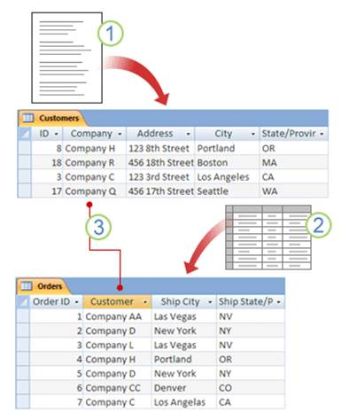
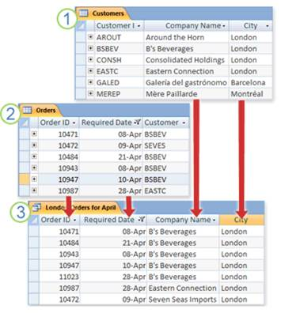
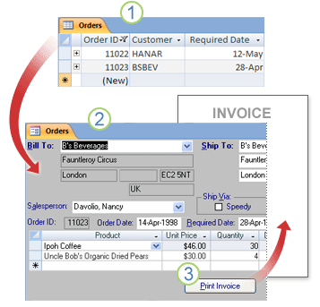
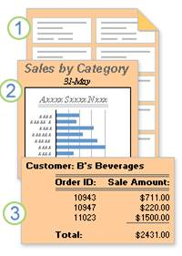

La base de datos y la estructura de base de datos se definen en el proceso de instalación. La estructura de base de datos depende de si la base de datos es Oracle Data base. Conjunto de tablas de catálogo de sistema que describe la estructura lógica y física de los datos. Archivo de configuración que contiene los valores de parámetro asignados a la base de datos. Registro de recuperación con transacciones en curso y transacciones archivables
Tablas y relaciones
Para almacenar los datos, cree una tabla por cada tipo de datos del que quiera realizar un seguimiento. Los tipos de datos pueden ser información de clientes, productos y detalles de pedidos. Para agrupar los datos de varias tablas en una consulta, formulario o informe, defina relaciones entre las tablas.

Consultas
Una consulta puede ayudarle a encontrar y recuperar los datos que cumplan las condiciones que especifique (incluidos datos de varias tablas). También puede usar una consulta para actualizar o eliminar varios registros al mismo tiempo y para realizar cálculos predefinidos personalizados en los datos.

Formularios
Puede usar un formulario para ver, escribir y cambiar fácilmente datos de filas de una en una. También puede usar un formulario para realizar otras acciones, como enviar datos a otra aplicación. Los formularios suelen contener controles vinculados a campos subyacentes de tablas.

Informes
Puede usar un informe para analizar rápidamente los datos o para presentarlos de una manera específica al imprimirlos o al exportarlos a otros formatos. Por ejemplo, puede enviar un informe a un compañero donde se agrupen datos y se calculen totales. O bien puede crear un informe con los datos de las direcciones con un formato adecuado para la impresión de etiquetas postales.
